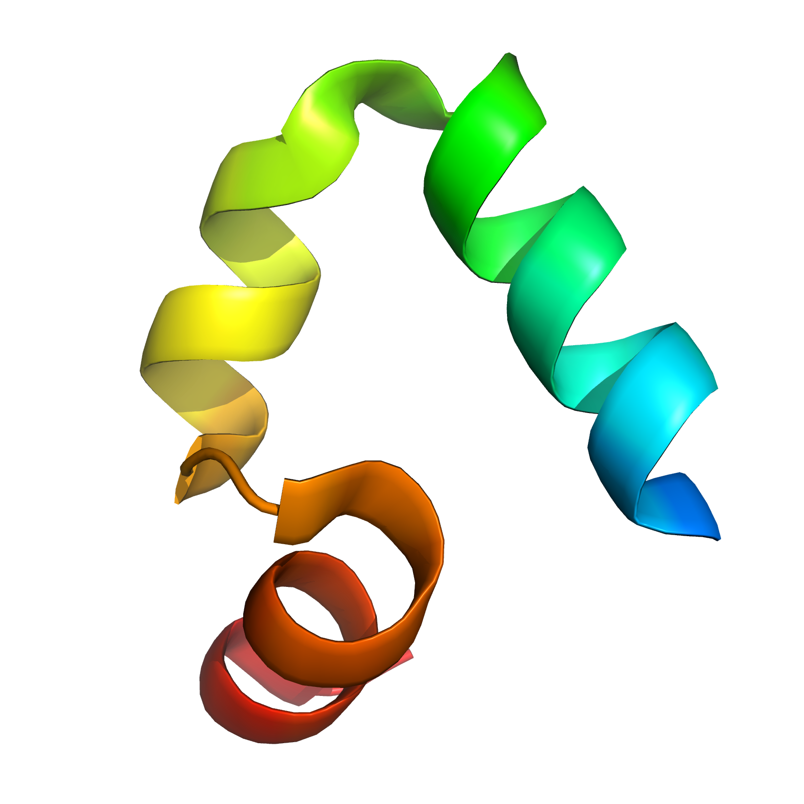
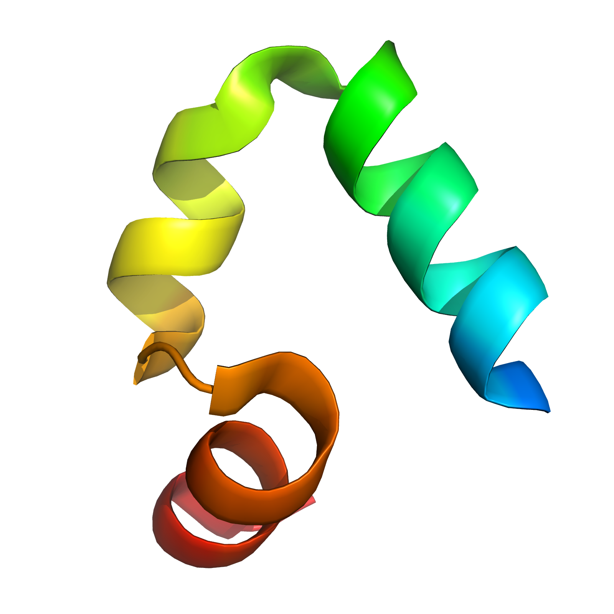

Towards Robust Kinetic Models at the Kinome Scale
Kyle Beauchamp
Chodera Lab
The Human Kinome
Ligand Binding and Metastable States

Physical Simulation of Kinase Inhibitors
Challenges in Simulation
- Precision (Sampling)
- Quantitative Connection to Experiment (Prediction)
- Interpretation (Dimensionality Reduction)
Markov State Models of Kinetics
- Statistical sampling by short simulations (Sampling)
- Predict arbitrary time-correlation functions (Prediction)
- Few-state models for interpretability (Reduction)

Introduction to Markov State Models

Introduction to Markov State Models

Introduction to Markov State Models

The Markov State Model Pipeline
Challenges in MSM Construction
- No score function for overall model
- Hyperparameters in every step
- Bias variance tradeoff is unwinable (10,000 states)
HMMs of Molecular Kinetics


A HMM Pipeline for Molecular Kinetics
MSMBuilder, MDTraj, Mixtape (MSMB3)
Open-Source, High-Performance Featurization, Modeling, and Analysis
Loading and Saving Trajectories
import mdtraj as md
import glob
trj0 = md.load("./Trajectories/trj0.h5")
trj0.save("out.pdb")
filenames = sorted(glob.glob("./Trajectories/*.h5"))
trajectories = [md.load(filename, stride=stride) for filename in filenames]
Trajectory Featurization
import mixtape featurizer = mixtape.featurizer.AtomPairsFeaturizer([[0, 1],[1, 2], [2, 3]], trj0) X = featurizer.featurize(trj0) array([[ 0.10102207, 0.15920012, 0.16530874]], dtype=float32)
Slow Feature Detection with tICA
Goal: Find slowest linear combination of $f_i(t)$
$$C(t) x = \lambda(t) \Sigma x$$
tica = mixtape.tica.tICA() map(lambda trj: tica.partial_fit(featurizer.featurize(trj)), trajectories) X_slow = map(lambda trj: tica.transform(featurizer.featurize(trj)), trajectories)
HMMs of Molecular Kinetics
model = mixtape.ghmm.GaussianFusionHMM(n_states) model.fit(X_slow)
Metastable States of the Kinome
Recovering Known Metastable States
 

Recovering Known Metastable States

Metastable States of src Kinase?
Metastable States of src Kinase?
Future Work
- Cross-Validated Likelihood
- Pipelining and Concatenating Featurizers
- Randomized Feature Selection
- Outlier Detection of Bad Trajectories
- Improved Simulation Protocols and Parameters
Acknowledgements
- Chodera Lab
- Robert McGibbon and MSMBuilder Developers
- Folding@Home + Vijay Pande